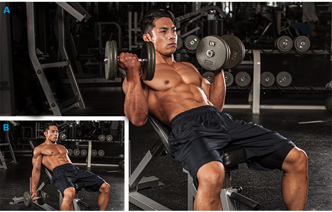

Barbell Bench Press
You can generate the most power with barbell lifts, so the standard barbell bench allows you to move the most weight. It's also an easier lift to control than pressing with heavy dumbbells.
Low-Incline Barbell Bench Press
Go for a less-steep incline to hit the upper pecs without as much stress on the delts. If you're really looking to build that shelf of an upper chest, EMG results have suggested that bringing your grip in a bit closer may hammer upper-chest fibers significantly more.
Dips For Chest
Make sure you're doing dips that emphasize the pecs: Put your feet up behind you, lean forward as far as possible, and allow your elbows to flare out as you dip. Chest dips are a great spotter-free alternative to the decline press.
Pec-Deck Machine
This exercise is a great movement teacher, and you can go for a great pump without having to balance any weights. EMG data shows that activation of the pectoralis major and anterior delt are statistically similar between the pec deck and bench press, which means that even though you'll probably be working in different rep ranges for each exercise, you'll get great chest activation from this machine.
Push-ups
If you are new at this exercise and do not have the strength to perform it, you can either bend your legs at the knees to take off resistance or perform the exercise against the wall instead of the floor. For the most advanced lifters, you can place your feet at a high surface such as a bench in order to increase the resistance and to target the upper chest more.
Barbell Deadlift
This is technically more than a back exercise—it hits the entire posterior chain from your calves to your upper traps—but it's the absolute best for overall backside development. Technique is uber-important with the deadlift, but once you nail it, you can progress to lifting monster weights that will recruit maximum muscle, release muscle-building hormones, and help you get big.
Wide-Grip Pull-Up
It's always a good idea to have an overhead pulling movement in your back routine, and the pull-up is one of the best. Wide-grip pull-ups are excellent for putting emphasis on the upper lats. A closer grip may allow for a longer range of motion, but it may be possible to load the wide-grip pull-up to a greater degree because of an optimized starting joint position. The biggest challenge here for most trainers is training to failure in the right rep range for growth, which is 8-12.
Standing T-Bar Row
These aren't squats, so keep your legs locked in a bent angle throughout. You also typically have a choice of hand positions and width. A wider grip will put more emphasis on the lats, while a neutral grip will better target the middle back (rhomboids, teres, and traps). This exercise is probably one of the easier rows to spot.

Dumbbell Shrug
The exercise primarily targets the trapezius muscle of the back. The barbell shrug is an isolation movement, meaning it utilizes just one joint. Shrugs should be part of a back workout that also includes compound movements such as lat pulldowns, pullups and rows.
Dumbbell Lateral Raise
This is a great single-joint movement for the middle delts, but they're tougher to master than they seem. Beginners often have trouble learning how to lead with their elbows. They also tend to rest at the bottom of the motion, when in fact it's better to stop the downward arc when their arms are about 30 degrees out to their sides.
Arnold Press
Start with the dumbbells in front of your shoulders with your palms facing you. Press the weights overhead while simultaneously rotating your wrists, so that, in the top position, your palms face forward. Rotate your wrists in the opposite direction when lowering the weights.
Prone Reverse Fly
Skip the machines. A recent study showed that the EMG activity for the posterior deltoid and infraspinaturs was greatest when performing a reverse fly with a neutral hand position (palms facing each other) compared to a pronated grip (palms down). While you might be tempted to hop onto the seated reverse fly machine, you're better off using free weights and a bench to perform the prone reverse dumbbell fly. Not only do free weights allow you to get in the optimal hand position, the movement also better isolates the rear delts and recruits more stabilizers than the machines.
Biceps
Incline Inner-Biceps Curl
The biceps brachii actually consists of two portions or "heads," with differing attachment points. The "long" head actually attaches above the shoulder joint, which means that the position of the upper arm relative to the body can determine how much each head of the biceps helps during a curl. This exercise gets your humerus behind your body, stretching the long head to the max. The more horizontal the bench, the more the long head will be stretched.
EZ Bar Curl
Many find the EZ bar significantly more comfortable than a straight bar. It shifts a little bit of the load from the biceps brachii to your other elbow flexors, so an argument could be made that the EZ bar curl is the best all-around biceps builder.
Hammer Curl
The "hammer" or neutral wrist position will typically be our strongest curl. This is because all of our elbow flexors are actively involved; the brachialis is worked the hardest. I would recommend doing this movement like a concentration curl or on a preacher bench. This should minimize cheating and maximize recruitment.
Triceps
Skullcrusher
While this move—also known as a French press or lying triceps extension—doesn't necessarily isolate the lateral or long-triceps head more than the other exercises, the arm position perpendicular to your body combines the activity of the two heads to catapult this movement to the top of the list.
Cable push-downs
Cable push-downs actually activated the lateral head of the triceps greater than skullcrushers, kick-backs, or any other major triceps exercise.2 If you're not doing this movement already, it's a fairly good single-joint lateral-head movement as long as you don't let your elbows drift from your sides.
Seated Overhead Dumbbell Extension
Once your arms go overhead, the long head becomes the target, so it's always a good idea to include some kind of arms-overhead exercise in your triceps routine. This is but one of many good options, and it's probably the easiest to get into the start position, especially when seated. If you've got a partner, it's even easier if he hands you the weight. (You can also do a few assisted reps.) Once again, minimize elbow flare on this movement.
Reverse Curl
Dumbbell or barbell, up to you. Grasp the bar overhand at whatever width is comfortable. Keeping your upper arms against your sides, curl the bar.
Wrist Curl
Hold a dumbbell in each hand and sit on a bench, box, or chair. Rest your forearms on your thighs and allow your wrists to bend back over your knees so the weights hang down. Curl the dumbbells up by just flexing your wrists.
Russian Twists
Loaded Russian twists, performed for 10 reps per side. Hold a weight with both arms for resistance. Twist your torso to the right side until your arms are parallel with the floor. Move back to the starting position and then move to the opposite side.
Hanging Leg Raises
The hanging leg raise is another great ab exercise. Hanging from a chin-up bar, raise your legs until your legs and torso from a 90-degree angle. I usually do this exercise with a little twist, rotating my legs side to side. More work, greater reward.
The Plank
The plank helps develop overall core strength and stability. Hold yourself up using both elbows in the prone position and hold the position for as long as you possibly can. Also, incorporate the side plank into your ab routine, which is basically the same as the normal plank, only you lean on one elbow at the time and switch sides to hit both your left and right obliques.
Bicycle Crunch
With this movement, you’re targeting all three key areas at the same time. It combines a regular crunch, the side-to-side motion that targets the obliques, and the reverse crunch that hits the lower abs.
Cross Crunch
It’s a simple exercise, and you’re safe and supported on the ground. With the legs coming off the floor, you’re getting your lower abs. And because you’re coming at an angle, you’re hitting your obliques and your rectus abdominis, too.
Squats
Squats are the king of lower-body exercises. Why? Well, they work pretty much every muscle in your legs while strengthening your core, hips, and lower back. Just make sure you get the most out of the movement. With a back squat, stopping at parallel or just barely below puts most of the emphasis on your quads, leaving your glutes less engaged.
Hip Thrust
The Hip Thrust is a glute exercise designed to improve your strength, speed and power by teaching optimal hip extension. It's all about the power in your glutes, which are among the most powerful muscles in your body.

Walking Lunges
Keep your upper body straight, with your shoulders back and relaxed and chin up (pick a point to stare at in front of you so you don't keep looking down). Always engage your core. Step forward with one leg, lowering your hips until both knees are bent at about a 90-degree angle.
Bulgarian Split Squat
This one is deceptively difficult, partly because of balance and partly because you're training one side at a time. The Bulgarian split squat is essentially a split squat, but your rear leg is elevated, which forces the front leg to pick up more of the workload. Try it on a Smith machine if you find it difficult to balance the weight.
Leg Press
the leg press allows for a variety of foot positions, effectively enabling you to target weaknesses such as the teardrops or outer thighs. Be careful not to lower the sled too far, though; doing so will lift your glutes up off the butt pad and cause your lower spine to curl. A rounded back puts you at risk for an injury.
Squat
Squat doesn't only build glutes, squat is the king because they're simply the most challenging leg movement you can do, especially when loaded appropriately. They work all the lower-body musculature (we're counting glutes), and have been shown to spike muscle-building hormone release.
Calf Raise
The standing calf raise is a staple of basically all calf workouts because it’s simple and effective. Could be done with barbell, machines, dumbbell or even body weights.